SkyLune
iOS · Agentic RAG · Multi-Agent
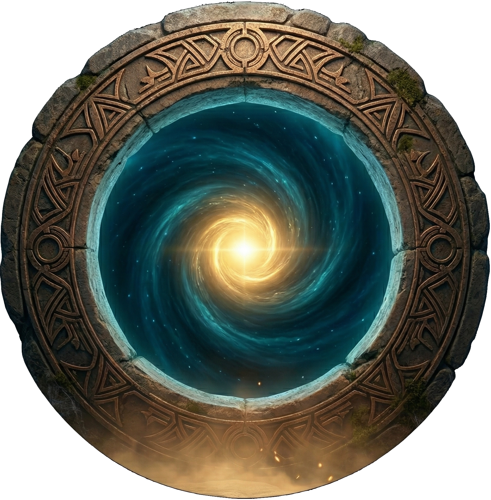
The AI revolution is shifting what the industry needs: from deep specialists in narrow domains to scientists who can think across disciplines, bridge the gaps between them, and build things that didn’t exist before. That’s the career I’ve shaped.
My work spans acoustics, materials science, semiconductor reliability, and agentic AI, leading projects that sit at the intersections where the most compelling problems live.
I’ve led a project at Intel that saved millions through physics-informed machine learning. At Penn State, I discovered novel semiconductor properties through molecular dynamics. I’ve also independently built production-ready AI products from the ground up.
Outside of research, I follow the same creative impulse through music. I play guitar, cajón, and Persian traditional drums, and I’ve released original work on streaming platforms.
Intel lead, $8M impact, semiconductor research, the full arc.
Papers spanning semiconductor physics, reliability ML, acoustic sensing.
Two product case studies — native iOS and a research workspace powered by agentic retrieval.
Original album, archetypal card art, end-to-end product design.
Every transition toward harder, more computational, more impactful problems.
Nine months at Intel IC Quality & Reliability: I led GPICS, a physics-informed GCN for predicting gate-level aging from circuit layout and extending those estimates to datapath reliability. The project combined large multi-condition reliability datasets, synthetic logic-path validation, and scalable model development, and it supported an estimated ≈$8M savings per test at the business level.
Peer-reviewed work across semiconductor physics, reliability ML, computational chemistry, and acoustic sensing.
Two product case studies with distinct stacks, interfaces, and technical ambitions.
iOS · Agentic RAG · Multi-Agent

Research Workspace · Hierarchical RAG · Multi-Agent
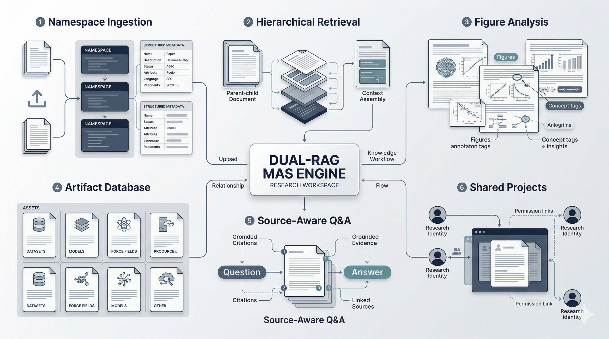
Immerse yourself in astrology: follow the moon, the signs, and the sky above your own life. Understand the messages your dreams carry through SkyLune’s specialized interpretation flow—record what you remember and walk it step by step when you are ready. Educate yourself with daily psychospiritual insight from bite-sized reflections you can finish in a quiet moment. SkyLune holds these together in a sanctuary of three portals—Astro World, Dream World, and Wisdom World—each a place for grounded practice.
Native Swift. Purpose-built AI engines. Curated knowledge bases from reputable published works. XP favors time spent with the material.
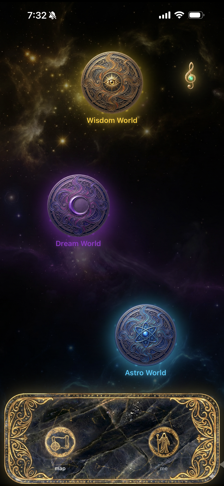
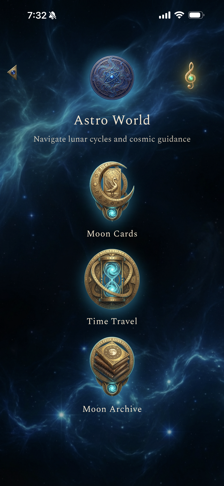
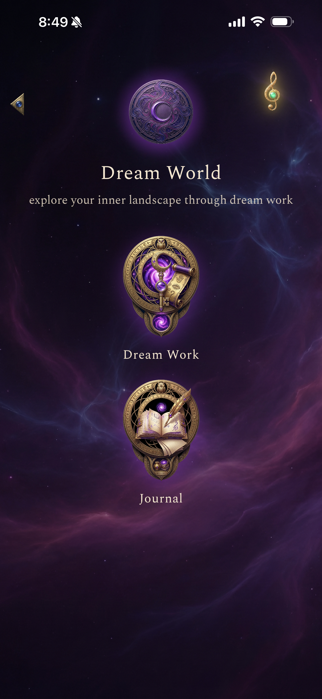
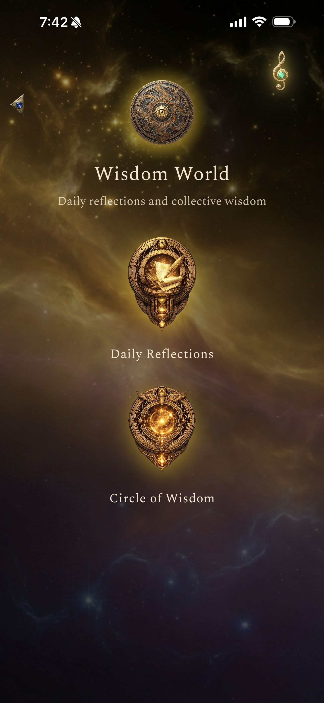
Each day you receive a card tied to the moon’s phase and sign and to your natal chart. Your reading arrives with artwork meant to hold the eye—cards that chart the psychic weather of the day.
Attune to the pull of the stars and carry a little more meaning, purpose, and awareness into whatever comes next.
When you want more than a first read, open Core and Support and sit with both layers—they are there so you can study the day more slowly and leave with a fuller sense of what it is asking.
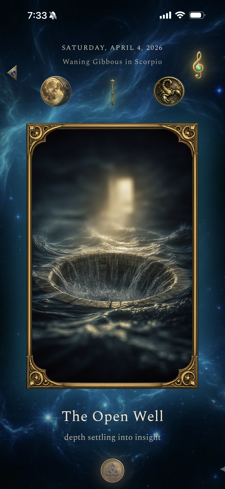
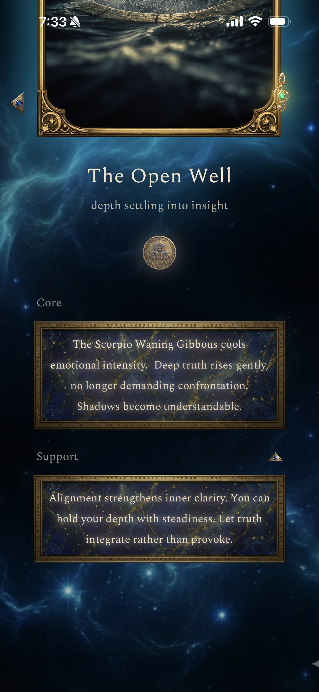
Choose any date and see its moon card and sky. The zodiac wheel shows planetary positions with accurate ephemeris data, filterable by Zodiac, Sun & Moon, or Planets.
What did the sky look like the day you were born—or on another date you still return to in memory? Jump to that moment and see the moon card and heavens as they were, then use the same flow for anniversaries, birthdays, or any day you want to revisit.
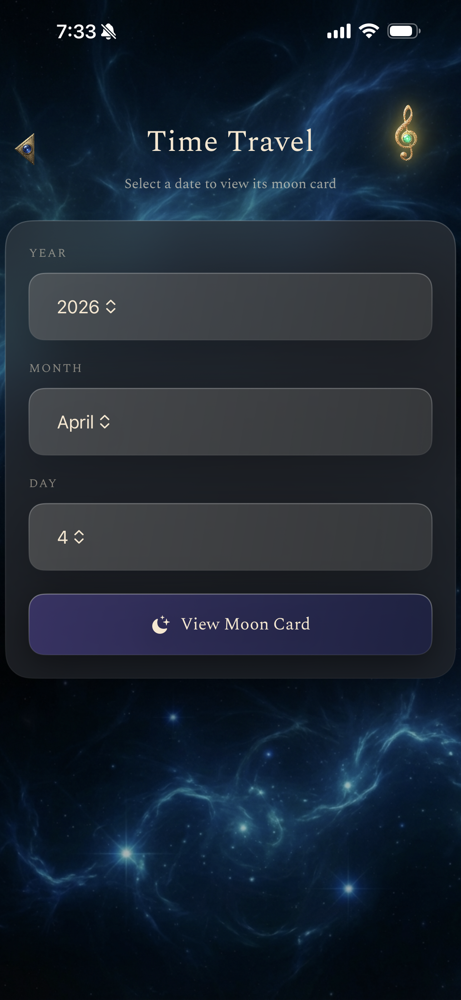
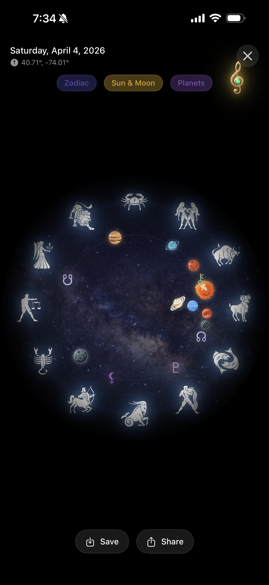
Every entry keeps that day’s moon phase and sign beside your words. Use speech-to-text when you’re on the move; the luxury journal holds what surfaces as you move through the practices—self-aware reflections you can return to and reshape.
Attach images, pull Core and Support lines from the day’s card into the page, copy daily insights when you want them elsewhere. Drafts save; edit when you’re ready. Folders, search, and an optional lock.
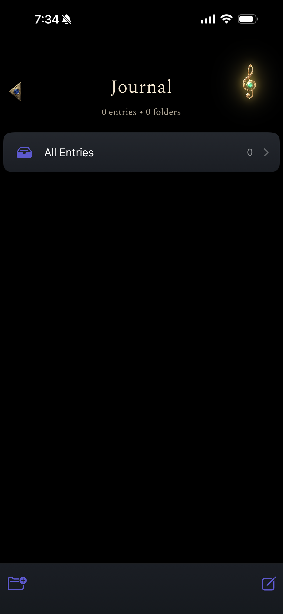
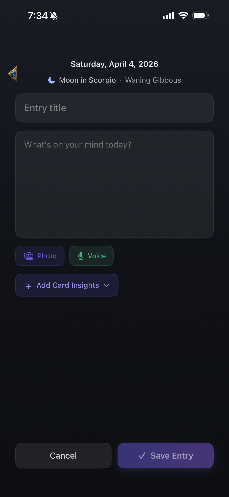
Dreams often carry messages from the unconscious. Record yours in SkyLune and work through them step by step with a specialized dream-interpretation model grounded in reputable writing from Jung and the analytical tradition.
You move through scenes, symbols, and body-felt tone before interpretations appear; the approach keeps your associations central and leaves room for more than one reading. Technical overview (engineering) →
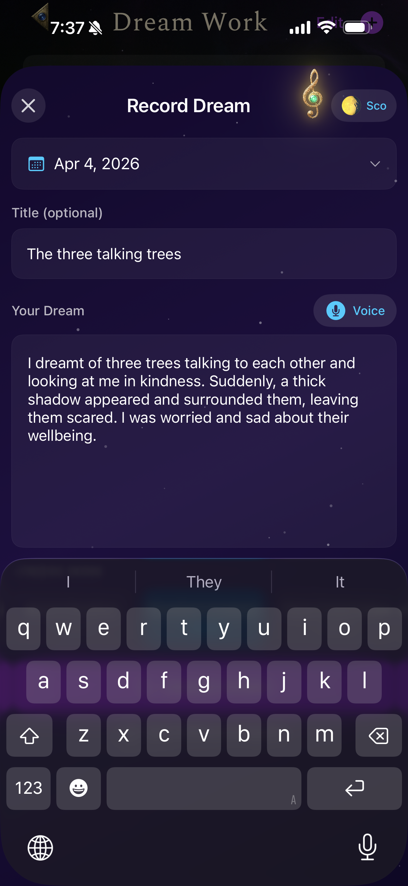
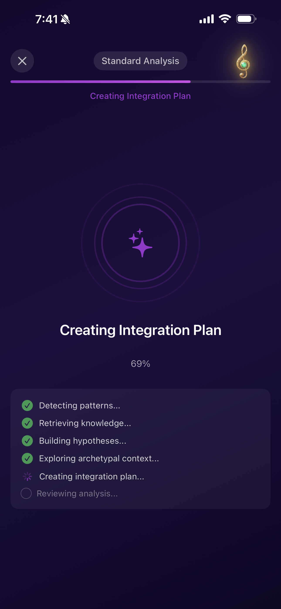
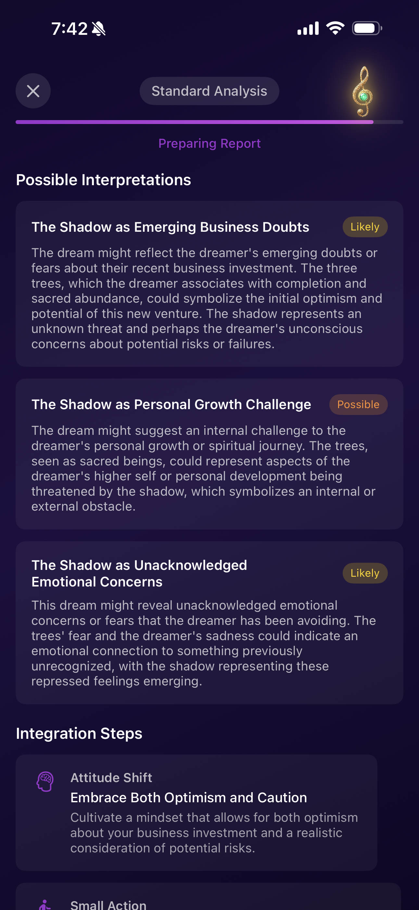
Think of it as a philosophy lesson for the day, tuned to the moon’s sign and phase.
The text draws on voices from modern thinkers, philosophers, spiritual teachers, and mystics—from Western philosophy to Eastern contemplative lineages—so you can grab a line worth keeping and carry it with you.
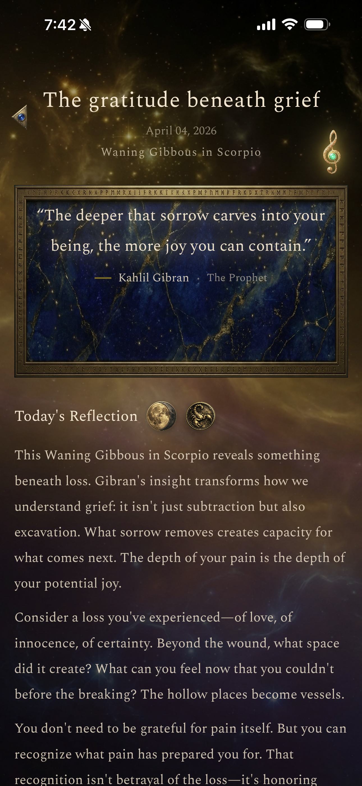
These are original instrumental pieces with real weight—each track follows its own theme, and the eight-piece set is deep enough to journey or meditate with when you want sound to do more than fill silence.
A floating music icon stays available everywhere in the app; tap it, choose a track, and give it the attention it deserves—headphones on, eyes closed, or low in the background while you read.
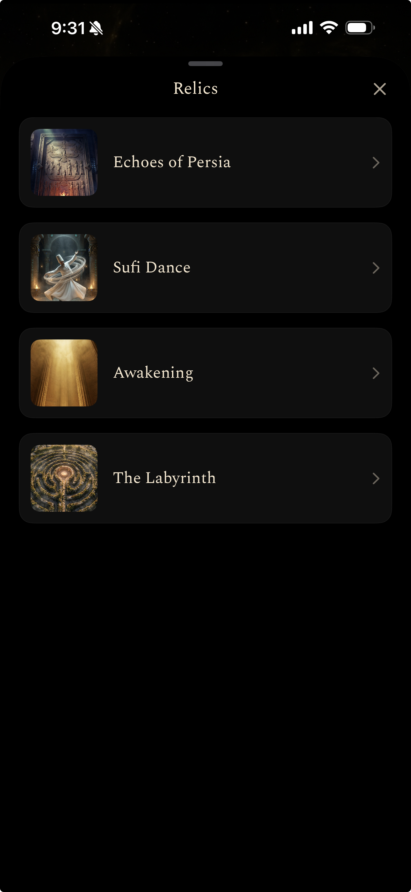
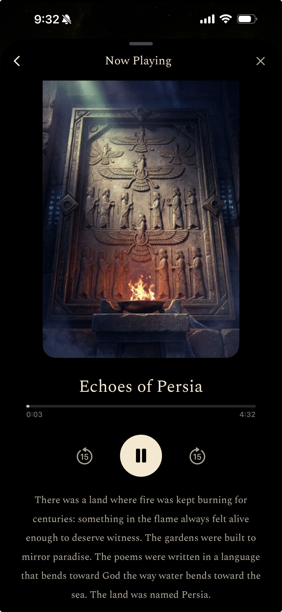
Summary of system design, rigor, and design tradeoffs at a level appropriate for technical evaluation and planning. This is not a build specification; implementation detail lives in the product repository.
The engine is a server-orchestrated, multi-stage analysis pipeline combining large language models with structured methodology, retrieval-augmented context, and explicit safety and epistemic guardrails. It powers Dream Work in the SkyLune iOS client: users progress through a guided flow (dream text, emotional scenes, personal associations) and receive multi-hypothesis interpretations and integration-oriented outputs instead of a single dictionary-style answer.
The methodology aims to reflect depth-oriented clinical craft—personal meaning first, provisional language, multiple defensible readings—while remaining deployable software with defined session lifecycle, API boundaries, and degradable dependencies.
Orchestrated multi-agent workflow. Analysis is not a one-shot prompt. A central orchestrator advances a discrete session through ordered stages aligned with how structured dream work is practiced: stabilize narrative, attend to feeling-tone, anchor symbols in the dreamer’s associations, then introduce curated conceptual material as support rather than authority. Specialized agents own slices of the pipeline (intake/structure, affect, associations, pattern detection, interpretation synthesis, optional amplification, integration planning, quality review, narrative summary). Each stage exposes a narrow I/O contract in structured form to keep behavior testable, auditable, and evolvable without a monolithic rewrite.
Dual retrieval (“dual-RAG”). Semantic retrieval spans multiple curated channels—conceptual material, exemplar cases, procedural guidance—so generation is grounded in an internal library aligned with the chosen methodology, not only in pretrained model prior. Retrieval is selective: it informs hypotheses and framing without collapsing output into generic archetype talk. Knowledge bases, orchestration policy, and generation are intentionally separated.
Methodology and policy layer. Interpretation is constrained by injected axioms and policies (e.g., multiple valid interpretations, non-diagnostic stance, disciplined use of archetypal vocabulary). This layer encodes product ethics as well as architecture: the system avoids false certainty and privileges the user’s own material.
| Area | Demonstrated capability |
|---|---|
| Systems design | Explicit state machine and orchestrator; separation of retrieval, generation, and session persistence; clear API surface for a mobile client. |
| ML product engineering | LLMs applied where language and synthesis add value; structured stages where reliability and UX dominate; hybrid symbolic workflow plus neural generation. |
| RAG | Multi-source retrieval with role-specific use (facts vs. cases vs. instructions), not a single undifferentiated context blob. |
| Safety & governance | Crisis and safety awareness in the pipeline; archetype terminology gated with user-context sensitivity where relevant. |
| Quality / cost | Hybrid strategies including deterministic post-processing for known failure modes to reduce bad outputs and wasted tokens without redundant model calls. |
| Operations | Containerized service, cloud deployment, health endpoints; tolerant fallbacks when optional infrastructure (cache/DB) is unavailable. |
| Cross-stack ownership | End-to-end design: iOS session cache, encoding alignment with server models, timeouts and degraded modes suited to mobile networks. |
The iOS app maintains a local-first session artifact synchronized with the engine over HTTPS. The client implements extended timeouts for LLM-heavy steps, graceful degradation under slow network or server load, and schema-level compatibility across Swift and Python stacks—standard distributed-systems practice applied to a multi-screen flow rather than a single form post.
This page does not include full state diagrams, prompt libraries, knowledge-base contents, embedding indices, or reproduction procedures; those remain internal engineering artifacts. Implementation documentation (API routes, agent contracts, setup) and deployment context live in the repository’s dream_engine/docs/ tree and deployment notes.
Positioning: a methodology-first, retrieval-grounded, multi-agent dream analysis engine built for accountable LLM use in a consumer ritual product—designed for depth, epistemic humility, and operability rather than black-box one-shot answers.
Literature Review Engine is a web application built to turn paper collections into usable project knowledge. Instead of acting like a thin chat layer over uploaded documents, it organizes papers, figures, artifacts, and question answering around a shared namespace so the workflow feels like a real research workspace.
The current product supports paper upload, hierarchical ingestion and retrieval, figure extraction and analysis, artifact browsing, source-aware question answering, and namespace sharing. The result is a system that helps teams move from raw documents to structured, reusable project context.
Technical overview (engineering) →
Papers are uploaded into project-specific namespaces through a web workflow that emphasizes organization and control. Users choose the target workspace, add files, and trigger ingestion so the content is prepared for retrieval, figure handling, and downstream analysis.
That structure matters because it turns document intake into an operational step rather than a one-off experiment. The product starts from project context, not from loose files.
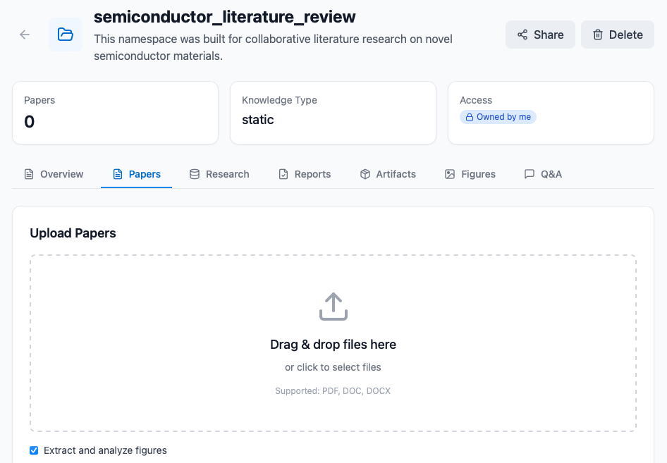
The core retrieval design preserves document structure instead of flattening papers into disconnected chunks. In practice, that leads to stronger section-aware retrieval and more coherent answers for methods, results, and paper-specific questions.
For users, this shows up as a question answering experience that feels better grounded: answers are tied back to retrieved paper context rather than produced as generic summaries.

The system does more than index text. It can extract figures during ingestion, surface them inside the interface, and support figure-level analysis so visual evidence becomes easier to inspect and reuse.
Alongside papers, each namespace can also track artifacts such as datasets, models, force fields, or related project files. That makes the workspace more useful for real technical teams that need both documents and supporting assets in the same environment.
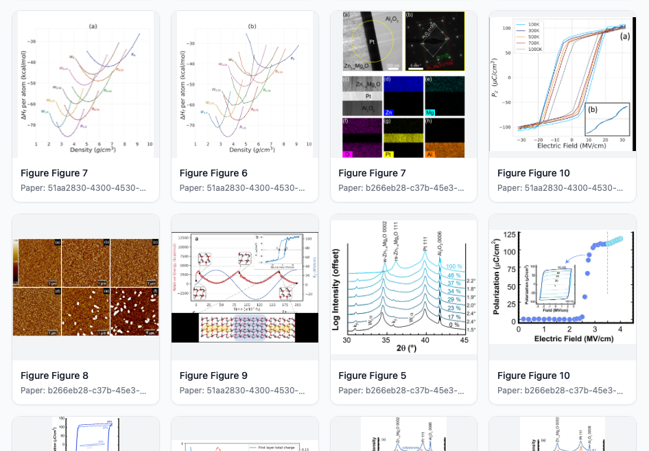
Namespaces are designed to be collaborative rather than single-user. Sharing controls make it possible to hand off project spaces and related resources to teammates, which is important for research groups and technical teams that work across shared paper sets.
This product direction is deliberate: the goal is not just better retrieval, but a workspace where project knowledge can be organized, revisited, and discussed together.
A technical overview of the architecture, system boundaries, and engineering decisions behind the research workspace. This complements the user-facing product page rather than replacing implementation documentation.
The engine is a full-stack research application I designed and implemented to turn technical paper collections into project-scoped knowledge systems. It combines a web interface, an application programming interface layer, namespace-based retrieval, a graph-backed knowledge layer, and multi-agent orchestration for question answering and analysis.
The project is designed to show applied artificial intelligence engineering beyond prompt wiring: system design, retrieval quality, observability, workflow boundaries, failure handling, and the balance between deterministic software and language-model reasoning.
| Area | Demonstrated capability |
|---|---|
| Architecture | Clear separation of frontend, application programming interface, retrieval, orchestration, and storage concerns. |
| Applied AI | Language models are used where synthesis helps; deterministic software handles administrative and project-management flows. |
| Retrieval quality | Hierarchical retrieval and namespace isolation improve context fidelity over generic chat-with-portable-document-file patterns. |
| Quality control | Behavioral checks distinguish retrieval failures from answer-generation failures and support regression-oriented safeguards. |
| Product delivery | The system is accessible through a real web product built for repeated use, not only through scripts or notebooks. |
| Extensibility | Namespaces, routes, agents, and retrieval layers are structured so the system can grow into richer synthesis and collaboration workflows. |
From an industry perspective, the project demonstrates end-to-end ownership across product and engineering concerns: web delivery, backend design, retrieval systems, multi-agent orchestration, quality instrumentation, and the practical judgment to decide when language-model logic should and should not be in the loop.
It is also a concrete example of how to design around workflow rather than around isolated model calls. The product surface, the system boundaries, and the observability strategy are all part of the engineering work.
Positioning: a research workspace that combines structured ingestion, hierarchical retrieval, figure-aware analysis, and multi-agent reasoning in a product built for actual technical workflows.
Creativity isn’t separate from science — it’s the engine of it.
2026 · 8 tracks · Instrumental · Streaming
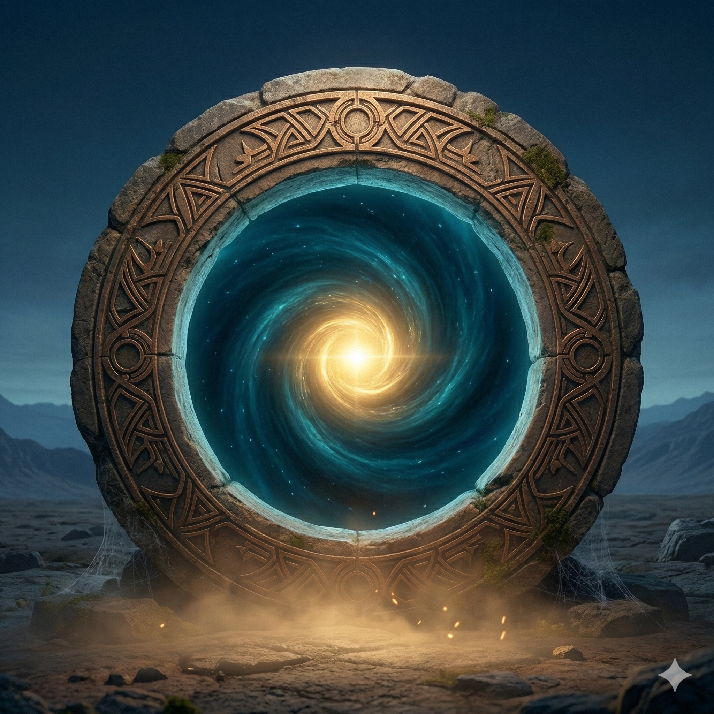
Moon cards · Tarot-informed
The daily moon cards pair readings with artwork meant to hold the eye—planetary configurations and lunar rhythm translated into a tarot-informed visual language. Frames borrow gold filigree and cinematic stillness so each card reads as an object, not a generic notification. The deck is built to sit beside the copy: archetypal without flattening into stock symbolism.
UI / UX · Two products
Interface work runs across the iOS spiritual app and the research workspace—each surface matched to how the product is used, not a single template. The app leans celestial and calm; the analytical product privileges clarity and traceability. The through-line is the same as in the music and cards: intentionality, hierarchy, and respect for the person on the other side of the glass. SkyLune product page →
© 2026 Alireza Sepehri